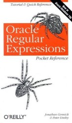

|
Easily use the power of regular expressions in Oracle Database 10g with RegexBuddy. Create and analyze regex patterns with RegexBuddy's intuitive regex building blocks. Implement regexes in your Oracle databases with instant SQL and PL/SQL statements. Just tell RegexBuddy what you want to achieve, and copy and paste the auto-generated SQL code. Get your own copy of RegexBuddy now. |
With version 10g, Oracle Database offers 4 regexp functions that you can use in SQL and PL/SQL statements. These functions implement the POSIX Extended Regular Expressions (ERE) standard. Oracle fully supports collating sequences and equivalence classes in bracket expressions. The NLS_SORT setting determines the POSIX locale used, which determines the available collating sequences and equivalence classes.
Oracle does not implement the POSIX ERE standard exactly, however. It deviates in three areas. First, Oracle supports the backreferences \1 through \9 in the regular expression. The POSIX ERE standard does not support these, even though POSIX BRE does. In a fully compliant engine, \1 through \9 would be illegal. The POSIX standard states it is illegal to escape a character that is not a metacharacter with a backslash. Oracle allows this, and simply ignores the backslash. E.g. \z is identical to z in Oracle. The result is that all POSIX ERE regular expressions can be used with Oracle, but some regular expressions that work in Oracle may cause an error in a fully POSIX-compliant engine. Obviously, if you only work with Oracle, these differences are irrelevant.
The third difference is more subtle. It won't cause any errors, but may result in different matches. As I explained in the topic about the POSIX standard, it requires the regex engine to return the longest match in case of alternation. Oracle's engine does not do this. It is a traditional NFA engine, like all non-POSIX regex flavors discussed on this website.
If you've worked with regular expressions in other programming languages, be aware that POSIX does not support non-printable character escapes like \t for a tab or \n for a newline. You can use these with a POSIX engine in a programming language like C++, because the C++ compiler will interpret the \t and \n in string constants. In SQL statements, you'll need to type an actual tab or line break in the string with your regular expression to make it match a tab or line break. Oracle's regex engine will interpret the string '\t' as the regex t when passed as the regexp parameter.
Oracle Database 10g offers four regular expression functions. You can use these equally in your SQL and PL/SQL statements.
REGEXP_LIKE(source, regexp, modes) is probably the one you'll use most. You can use it in the WHERE and HAVING clauses of a SELECT statement. In a PL/SQL script, it returns a Boolean value. You can also use it in a CHECK constraint. The source parameter is the string or column the regex should be matched against. The regexp parameter is a string with your regular expression. The modes parameter is optional. It sets the matching modes.
SELECT * FROM mytable WHERE REGEXP_LIKE(mycolumn, 'regexp', 'i');
IF REGEXP_LIKE('subject', 'regexp') THEN /* Match */ ELSE /* No match */ END IF;
ALTER TABLE mytable ADD (CONSTRAINT mycolumn_regexp CHECK (REGEXP_LIKE(mycolumn, '^regexp$')));
REGEXP_SUBSTR(source, regexp, position, occurrence, modes) returns a string with the part of source matched by the regular expression. If the match attempt fails, NULL is returned. You can use REGEXP_SUBSTR with a single string or with a column. You can use it in SELECT clauses to retrieve only a certain part of a column. The position parameter specifies the character position in the source string at which the match attempt should start. The first character has position 1. The occurrence parameter specifies which match to get. Set it to 1 to get the first match. If you specify a higher number, Oracle will continue to attempt to match the regex starting at the end of the previous match, until it found as many matches as you specified. The last match is then returned. If there are fewer matches, NULL is returned. Do not confuse this parameter with backreferences. Oracle does not provide a function to return the part of the string matched by a capturing group. The last three parameters are optional.
SELECT REGEXP_SUBSTR(mycolumn, 'regexp') FROM mytable;
match := REGEXP_SUBSTR('subject', 'regexp', 1, 1, 'i')
REGEXP_REPLACE(source, regexp, replacement, position, occurrence, modes) returns the source string with one or all regex matches replaced. If no matches can be found, the original string is replaced. If you specify a positive number for occurrence (see the above paragraph) only that match is replaced. If you specify zero or omit the parameter, all matches are replaced. The last three parameters are optional. The replacement parameter is a string that each regex match will be replaced with. You can use the backreferences \1 through \9 in the replacement text to re-insert text matched by a capturing group. You can reference the same group more than once. There's no replacement text token to re-insert the whole regex match. To do that, put parentheses around the whole regexp, and use \1 in the replacement. If you want to insert \1 literally, use the string '\\1'. Backslashes only need to be escaped if they're followed by a digit or another backslash. To insert \\ literally, use the string '\\\\'. While SQL does not require backslashes to be escaped in strings, the REGEXP_REPLACE function does.
SELECT REGEXP_REPLACE(mycolumn, 'regexp', 'replacement') FROM mytable;
result := REGEXP_REPLACE('subject', 'regexp', 'replacement', 1, 0, 'i');
REGEXP_INSTR(source, regexp, position, occurrence, return_option, modes) returns the beginning or ending position of a regex match in the source string. This function takes the same parameters as REGEXP_SUBSTR, plus one more. Set return_option to zero or omit the parameter to get the position of the first character in match. Set it to one to get the position of the first character after the match. The first character in the string has position 1. REGEXP_INSTR returns zero if the match cannot be found. The last 4 parameters are optional.
SELECT REGEXP_INSTR(mycolumn, 'regexp', 1, 1, 0, 'i') FROM mytable;
The modes parameter that each of the four regexp functions accepts should be a string of up to three characters, out of four possible characters. E.g. 'i' turns on case insensitive matching, while 'inm' turns on those three options. 'i' and 'c' are mutually exclusive. If you omit this parameter or pass an empty string, the default matching modes are used.
O'Reilly's book Oracle Regular Expressions Pocket Reference is a very handy 64-page volume that tells you everything you need to know about regular expressions in Oracle Database 10g. Despite the book's cover, it actually contains both a tutorial and a reference. Since Oracle's regular expression support is fairly limited, this small book is all you need to successfully use regular expressions with Oracle.
My review of the book Oracle Regular Expressions Pocket Reference
Did this website just save you a trip to the bookstore? Please make a donation to support this site, and you'll get a lifetime of advertisement-free access to this site!
Page URL: http://www.Regular-Expressions.info/oracle.html
Page last updated: 02 December 2010
Site last updated: 17 June 2013
Copyright © 2003-2013 Jan Goyvaerts. All rights reserved.
| Regex Tools |
| grep |
| PowerGREP |
| RegexBuddy |
| RegexMagic |
| General Applications |
| EditPad Pro |
| Languages & Libraries |
| Delphi |
| GNU (Linux) |
| Groovy |
| Java |
| JavaScript |
| .NET |
| PCRE (C/C++) |
| Perl |
| PHP |
| POSIX |
| PowerShell |
| Python |
| R |
| REALbasic |
| Ruby |
| Tcl |
| VBScript |
| Visual Basic 6 |
| wxWidgets |
| XML Schema |
| XQuery & XPath |
| Databases |
| MySQL |
| Oracle |
| PostgreSQL |
| More Information |
| Introduction |
| Quick Start |
| Tutorial |
| Tools and Languages |
| Examples |
| Books |
| Reference |
| Print PDF |
| About This Site |
| RSS Feed & Blog |
| PowerGREP 4 |
| Use regular expressions to search through large numbers of text and binary files. Quickly find the files you are looking for, or extract the information you need. Look through just a handful of files or folders, or scan entire drives and network shares. |
| Search and replace using text, binary data or one or more regular expressions to automate repetitive editing tasks. Preview replacements before modifying files, and stay safe with flexible backup and undo options. |
| Use regular expressions to rename files, copy files, or merge and split the contents of files. Work with plain text files, Unicode files, binary files, compressed files, and files in proprietary formats such as MS Office, OpenOffice, and PDF. Runs on Windows 2000, XP, Vista, 7, and 8. |
| More information |
| Download PowerGREP now |